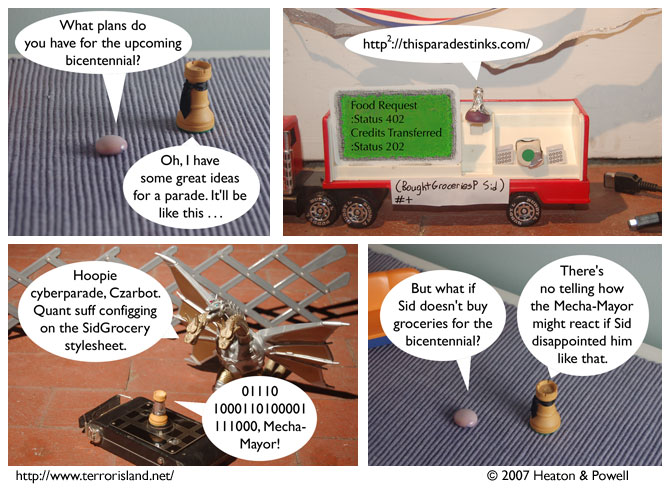

Strip #205
— Wednesday, October 3, 2007
The binary doesn’t mean anything because Stephen doesn’t know binary.
Notes, Thoughts, &c.
Ben’s Notes
OK, so you can probably tell that I used an old Mecha King Ghidorah action figure for the Mecha-Mayor. But did you notice that:
- The holomatrix on the float is actually a Fluxx card?
- Stephen’s podium for addressing the Mecha-Mayor is actually a camera?
- That cable on the right side of panel two is actually some random cable I had lying around?
- Panel one was actually photographed after panels two and three, despite taking place before them?
Lewis’s Notes
I have spent a fair amount of time recently thinking about a philosphical thought experiment which I am calling “Aerobic Twin Earth.” Saying any more about it would likely reveal that this is not the most exciting thing in the world, so I won’t.